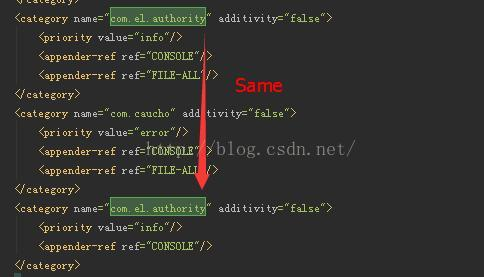
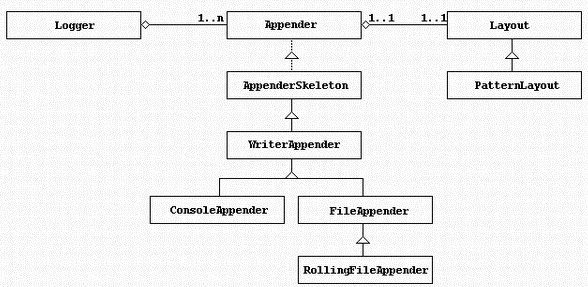
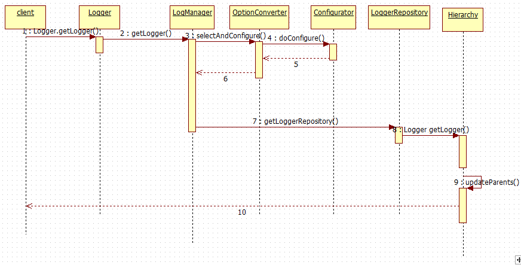
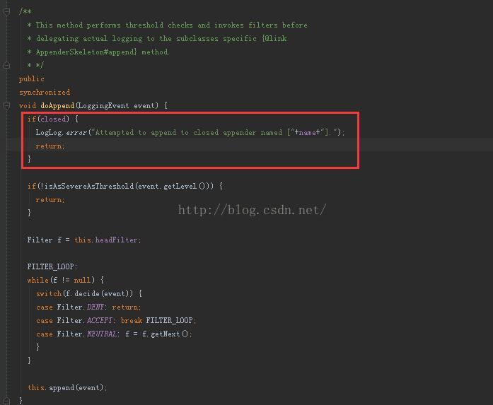
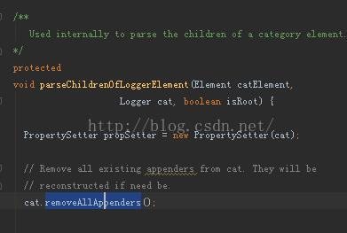

最近调试log4j的时候，一直遇到这个错误：
log4j:ERROR Attempted to append to closed appender named
一直未找到原因，看了几篇博客后知道，是有配置重合了，大家看：
这是以前的配置文件：

这样就会导致，log4j会清楚所有的appender，删除后，问题就排出了，这个bug督促我们，要努力看源码啊！
大家先看log4j的类图

不难发现，错误应该出现在appender上，我们顺着源码找一找：



现在觉得，应该是在处理ROOT节点的时候，将重复的输出都去除了，具体原因还要深入log4j的源码，欢迎大家共同交流。
在找bug的路上越走越远，甚至到了源码的地步，对于每一个走在源码的小伙伴们说一声，你们的博客太及时了！时序图太给力了！一切为了人民着想的分享，是无私的，分享的越多，得到的越多！